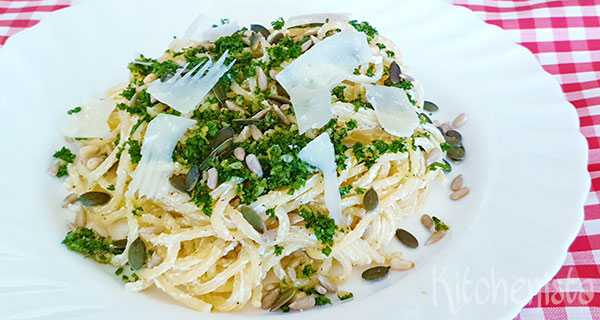

pasta gremolata met ricotta

Ingridiënten
- 500g farfalle
- 1 el pijnboompitten
- 1 teentje knoflook
- 1 citroenschil
- 250g ricotta
- Handje bladpeterselie
Bereiding
-
kook de pasta beetgaar in een ruimte hoeveel gezouten water
- snipper de peterselie en de knoflook. vermeng ze met de geraspte citroenschil.
- schep de ricotta door de warme pasta en verdeel over de borden. bestrooi de gremolata en werk af met pijnboompitten